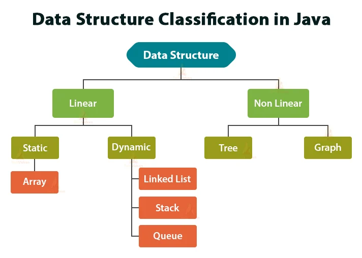

There are two types of Data Structures:
- Primitive Data Structures
- Non-primitive Data Structures
1. Primitive Data Structures: Also known as primitive data types, these are basic built-in data types in Java. They include:
- Byte: Stores whole numbers from -128 to 127.
- Short: Stores whole numbers from -32,768 to 32,767.
- Int: Stores whole numbers
- Int: Stores whole numbers from -2,147,483,648 to 2,147,483,647.
- Float: Stores floating-point numbers with single precision.
- Char: Stores individual characters.
- Boolean: Stores true or false values.
- Long: Stores large whole numbers.
- Double: Stores floating-point numbers with double precision.
2. Non-primitive Data Structures: Non-primitive data structures are more complex and are composed of primitive data types. They can be further categorized into two types:
1. Linear Data Structure
2. Non-Linear Data Structure
